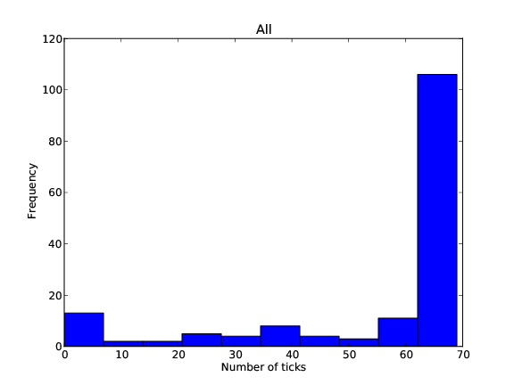

Personality and Performance in a flipped classroom
Themes
reveal.js comes with a few themes built in:
Black (default) -
White -
League -
Sky -
Beige -
Simple
Serif -
Night -
Moon -
Solarized

from __future__ import division
import random
class Drop():
def __init__(self, r=1):
self.x = (.5 - random.random()) * 2 * r
self.y = (.5 - random.random()) * 2 * r
self.incircle = (self.y) ** 2 + (self.x) ** 2 <= (r) ** 2
N = 10000
print 4 * len([k for k in range(N) if Drop().incircle]) / N

Lab Sheets
Class meeting
Completion of ticks

“ Active learning increases student performance in science, engineering, and mathematics ”Freeman et al. 2014
“ other-rated personality and academic performance: evidence and implications ”poropat et al. 2015
Data
- Agreeableness
- Extraversion
- Neuroticism
- Conscientiousness
- Openness1
- Openness2
Call:
lm(formula = Average_Mark_Other_Modules ~ Conscientiousness,
data = Factors_with_marks)
Residuals:
Min 1Q Median 3Q Max
-31.566 -8.448 1.575 8.652 31.377
Coefficients:
Estimate Std. Error t value Pr(>|t|)
(Intercept) 62.668 1.345 46.60 <2e-16 ***
Conscientiousness 3.075 1.366 2.25 0.0271 *
Call:
lm(formula = CfM_Total ~ Openness1, data = Factors_with_marks)
Residuals:
Min 1Q Median 3Q Max
-35.128 -7.733 0.497 10.046 22.899
Coefficients:
Estimate Std. Error t value Pr(>|t|)
(Intercept) 78.225 1.448 54.025 < 2e-16 ***
Openness1 4.474 1.533 2.918 0.00458 **

Call:
lm(formula = alpha ~ Extraversion + Conscientiousness + Openness1,
data = Factors_with_marks)
Residuals:
Min 1Q Median 3Q Max
-0.59457 -0.19410 -0.01078 0.17633 0.93862
Coefficients:
Estimate Std. Error t value Pr(>|t|)
(Intercept) 1.29329 0.03189 40.551 < 2e-16 ***
Extraversion -0.06623 0.03168 -2.090 0.03988 *
Conscientiousness -0.09938 0.03249 -3.059 0.00306 **
Openness1 0.07700 0.03375 2.281 0.02530 *
Interpretation
- Conscientiousness work has significant effect in traditional class.
- Openness has significant effect in flipped class.
- Relative performance is affected by both.
So what?
- Scaffolding.
- Interest.
- Perhaps: this pedagogic approach incentives deep learning.
Focus groups
“ I think it’s just a module that you get out of it what you put in, so all of us round this table, clearly put plenty in. ”Tutor I
Summary
- Large flipped class.
- Research in to effect of personality of performance.
- Not leaving anyone behind.
Further Work
- Categories
- Focus Groups
- More literature